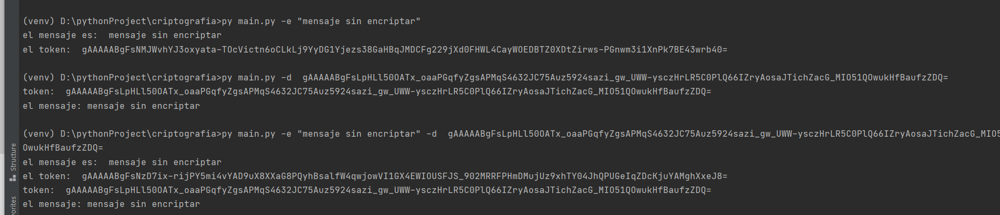
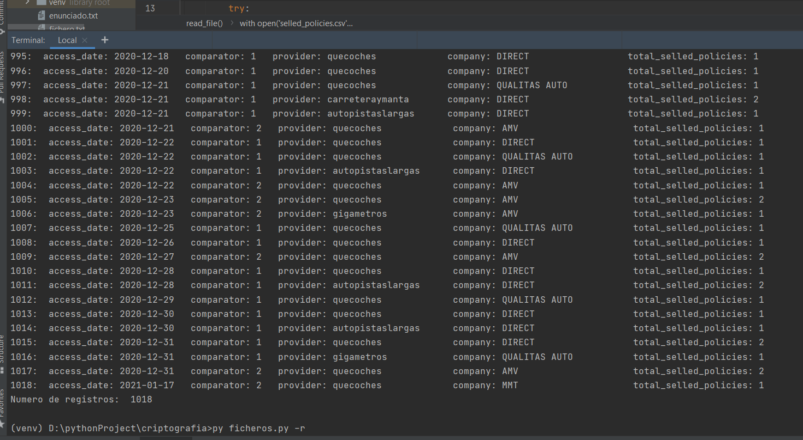
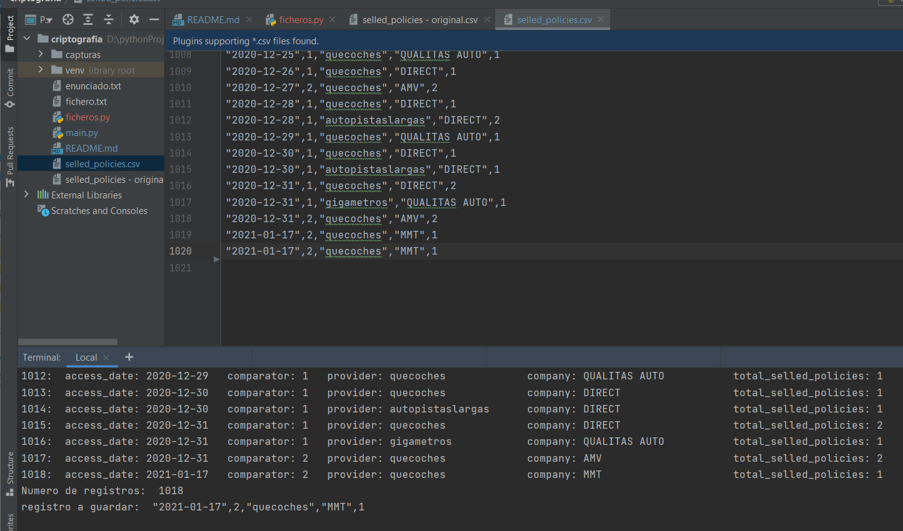

Para la presente práctica vamos a trabajar con la librería cryptography de Python para enviar y recibir mensajes encriptados y la librería os para acceso a ficheros y posterior manejo sobre ellos.
Dada la librería cryptography, realizad la instalación en vuestro entorno de trabajo para poder hacer uso de ella.
Una vez instalada construir un programa que según un parámetro de entrada -e (encode) o -d (decode) reciba una cadena de caracteres en texto plano y la encripte o bien la desencripte según el parámetro.
Para ello nuestro programa, en primer lugar, deberá generar una clave para codificar y decodificar (esta debe ser la misma).
El programa tras generar la clave, debe ser capaz de almacenarla en un fichero para poder consultar la clave para poder decodificar un texto si se lo pasamos codificado o para codificar un texto si se lo pasamos en formato plano.
El programa deberá comprobar que existe un fichero con clave para no generar otra. Si esta comprobación no existe, se podría dar el caso de que cree una clave para codificar y después no podamos decodificar un mensaje o a la inversa.
Dado el fichero adjunto en la práctica (selled_policies.csv), se pide crear un programa capaz de leer y escribir sobre el mismo fichero.
Según el modo de apertura que le pasemos como parámetro al programa este realizará unas acciones:
○ ¡NOTA!: se puede hacer uso de otros modos de apertura para escribir la última línea duplicada. Por ejemplo, al recorrer el fichero guardar la última línea en una variable y abrir de nuevo el fichero en modo Añadido (este dispone el puntero al final del fichero para seguir escribiendo) y de esta forma duplicar esa última línea con lo guardado en la variable.
https://github.com/jrodriguezballester/Criptografia.git
El mensaje a encriptar, si tiene espacios en blanco debe escribirse entre comillas "
Instrucciones esenciales para cumplir los requisitos del enunciado
 Ejecución del programa con sus parámetros por separado y a la vez
El programa se ejecuta con tres argumentos excluyentes (solo uno cada vez)
Depende de:
py ficheros.py -r 
py ficheros.py -r+
Fichero selled_policies.csv modificado  (El desfase entre el número de registro y el número de línea se debe a la línea de cabecera con los campos)